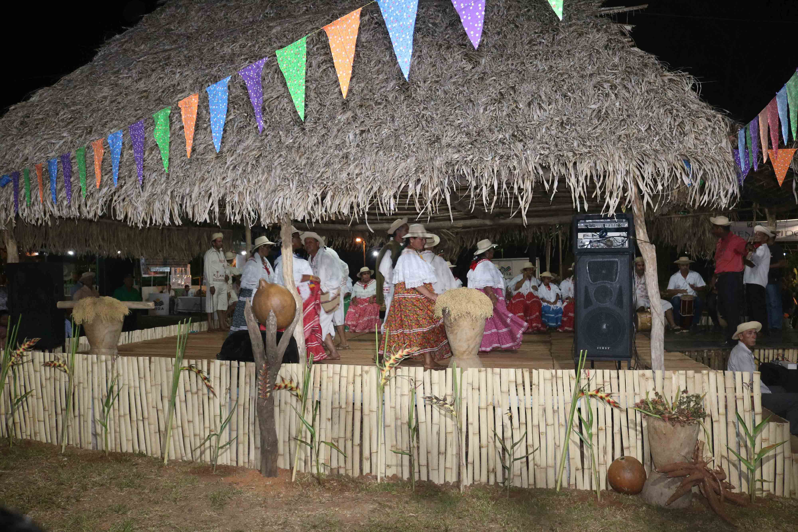

Riqueza cultural
Actividades folclóricas
En este evento ferial, no podemos ignorar la cultura musical que se presenta durante todos los días de feria, se incluyen los bailes de o con mejorana, donde un grupo de auténticos manitos bailan al son, las cumbias, la mejorana por 25, el Valdivieso, el socavón llanero, el zapatero y otros bailes afines.

El folclore es una parte importante de la identidad cultural de un pueblo o región, y puede variar significativamente de una región a otra, incluso dentro del mismo país.

Presentaciones culturales
También el visitante se deleitará con el canto de décima que al son de la mejorana cantarán las mujeres y hombres, tratan temas al folclor, a la mujer, al ambiente, al santo patrón, y/o temas de actualidad, igual con los bailes y toque de tambor o tamborito, cuyas agrupaciones dan lo mejor de sí para dar conocer el rico potencial que tienen las mujeres en el canto, los hombres en el bailar y ejecutar los tambores, es decir es una mancuerna musical de canto y baile, donde el galanteo de la mujer hace engrandecer el pintoresco pueblo y hasta la patria.